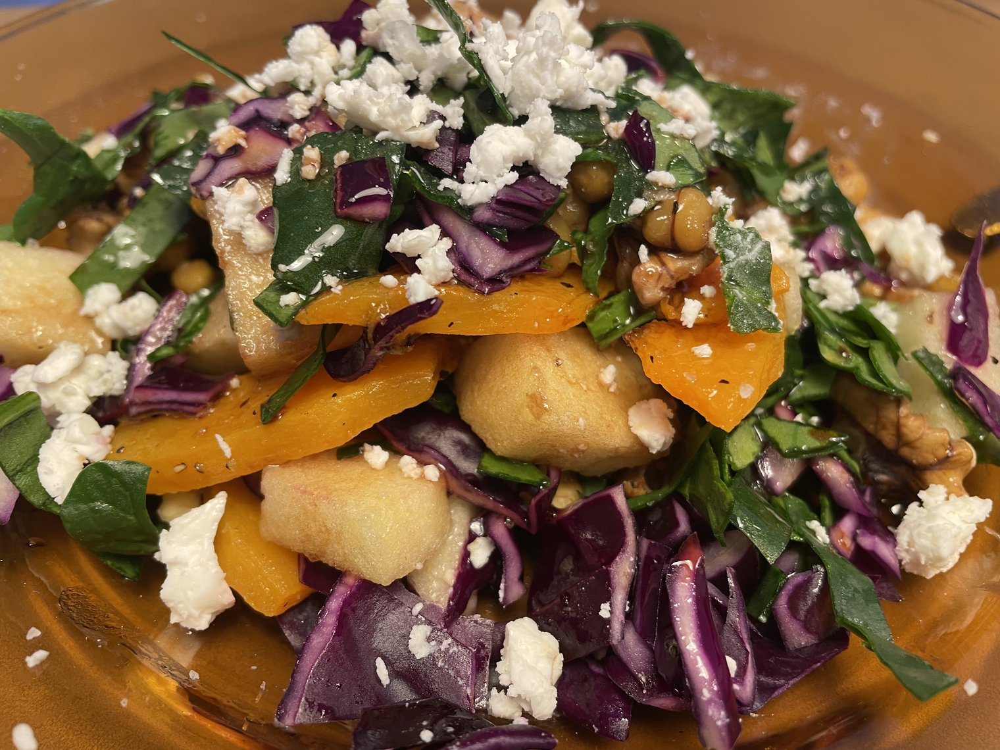

Ensalada de col, espinacas, manzana, calabaza al horno, garbanzos, feta y nueces
Ingredientes
4×
- 0.5 calabaza
- aceite de oliva
- sal
- 1 pote pequeño de garbanzos
- 0.33 de col
- manojo de espinacas frescas
- 1 manzana
- 100 g de feta
- 120 g de nueces

Preparación
Paso 1
Cortar 0.5 calabaza en dados y hornearla 30min a 200ºC con aceite de oliva y sal. En la misma bandeja, hornear 1 pote pequeño de garbanzos escurridos.
Paso 2
Cortar en juliana fina 0.33 de col y un manojo de espinacas frescas, y en dados 1 manzana.
Paso 3
Mezclar todo con 100 g de feta desmenuzado y 120 g de nueces, y aliñar con aceite de oliva y sal.